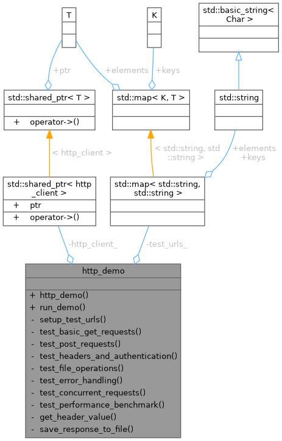
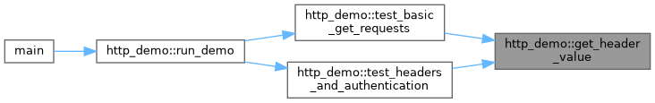
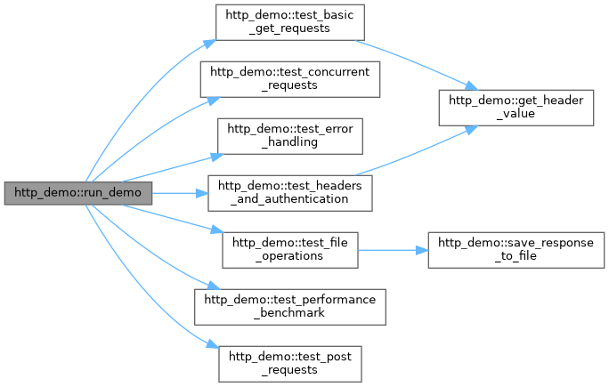
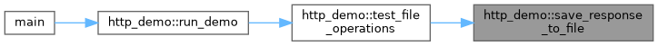
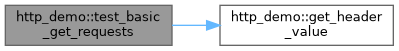
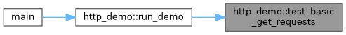
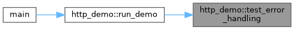
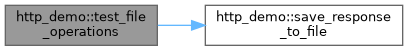
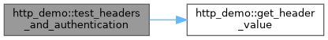

- Generated by
 1.12.0
1.12.0
|
Network System 0.1.1
High-performance modular networking library for scalable client-server applications
|

Public Member Functions | |
| http_demo () | |
| void | run_demo () |
Private Member Functions | |
| void | setup_test_urls () |
| void | test_basic_get_requests () |
| void | test_post_requests () |
| void | test_headers_and_authentication () |
| void | test_file_operations () |
| void | test_error_handling () |
| void | test_concurrent_requests () |
| void | test_performance_benchmark () |
| std::string | get_header_value (const http_response &response, const std::string &header_name) |
| bool | save_response_to_file (const http_response &response, const std::string &filename) |
Private Attributes | |
| std::shared_ptr< http_client > | http_client_ |
| std::map< std::string, std::string > | test_urls_ |
Definition at line 29 of file http_client_demo.cpp.
|
inline |
Definition at line 31 of file http_client_demo.cpp.
References http_client_, and setup_test_urls().
|
inlineprivate |
Definition at line 403 of file http_client_demo.cpp.
Referenced by test_basic_get_requests(), and test_headers_and_authentication().

|
inline |
Definition at line 36 of file http_client_demo.cpp.
References test_basic_get_requests(), test_concurrent_requests(), test_error_handling(), test_file_operations(), test_headers_and_authentication(), test_performance_benchmark(), and test_post_requests().
Referenced by main().

|
inlineprivate |
Definition at line 408 of file http_client_demo.cpp.
Referenced by test_file_operations().

|
inlineprivate |
Definition at line 54 of file http_client_demo.cpp.
References test_urls_.
Referenced by http_demo().
|
inlineprivate |
Definition at line 66 of file http_client_demo.cpp.
References get_header_value(), http_client_, and test_urls_.
Referenced by run_demo().


|
inlineprivate |
Definition at line 293 of file http_client_demo.cpp.
References test_urls_.
Referenced by run_demo().
|
inlineprivate |
Definition at line 241 of file http_client_demo.cpp.
References http_client_, and test_urls_.
Referenced by run_demo().

|
inlineprivate |
Definition at line 202 of file http_client_demo.cpp.
References http_client_, save_response_to_file(), and test_urls_.
Referenced by run_demo().

|
inlineprivate |
Definition at line 167 of file http_client_demo.cpp.
References get_header_value(), http_client_, and test_urls_.
Referenced by run_demo().

|
inlineprivate |
Definition at line 340 of file http_client_demo.cpp.
References http_client_, and test_urls_.
Referenced by run_demo().
|
inlineprivate |
Definition at line 112 of file http_client_demo.cpp.
References http_client_, and test_urls_.
Referenced by run_demo().
|
private |
Definition at line 51 of file http_client_demo.cpp.
Referenced by http_demo(), test_basic_get_requests(), test_error_handling(), test_file_operations(), test_headers_and_authentication(), test_performance_benchmark(), and test_post_requests().
|
private |
Definition at line 52 of file http_client_demo.cpp.
Referenced by setup_test_urls(), test_basic_get_requests(), test_concurrent_requests(), test_error_handling(), test_file_operations(), test_headers_and_authentication(), test_performance_benchmark(), and test_post_requests().